Unofficial study solution; not an official GTU answer key. Answers have not been independently verified. English text reflows; source equations, diagrams and Gujarati retain their original appearance. Use Enlarge image to inspect them.
આ બિનસત્તાવાર અભ્યાસ ઉકેલ છે, સત્તાવાર GTU જવાબવહી નથી. PDF માંથી ગુજરાતી લખાણ સાચું નીકળતું નથી, તેથી દરેક જવાબ મૂળ ચિત્રરૂપે જાળવ્યો છે. વાંચવા માટે ચિત્ર મોટું કરો. મૂળ પ્રશ્ન અને પરીક્ષાના વિકલ્પોની સૂચનાઓ અનુસરો.
Coverage: all five questions and all printed OR alternatives are solved: 28 parts. The original English question is retained in both language views; answers are English and Gujarati.
Printed instructions: attempt all questions; make suitable assumptions; figures on the right indicate full marks; simple and non-programmable scientific calculators are permitted; the English version is authentic.
Conventions: ideal-gas calculations use absolute pressure and kelvin; Antoine pressure uses the supplied base-10, °C and mm Hg constants. Diagrams are schematic.
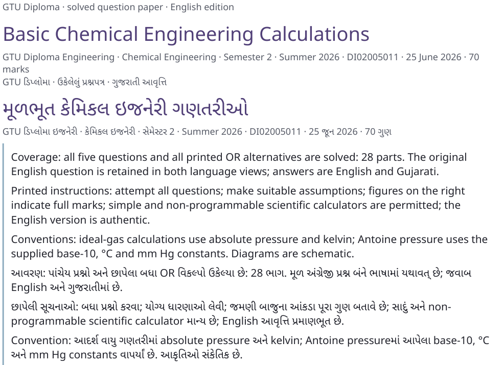
Question 1
Q1 · SI quantities and unit conversions
Q.1 (a) · List the SI units corresponding to 1. Power 2. Temperature 3. Length · 3 marks
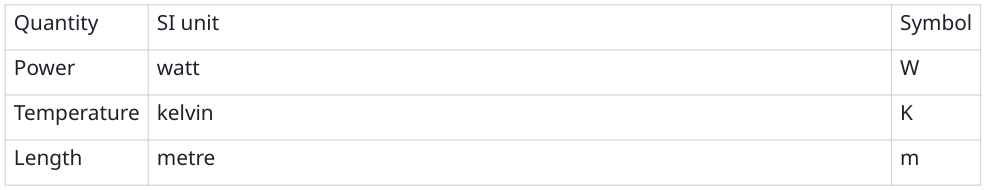
The SI temperature unit is kelvin, not degree kelvin; Celsius temperature can be converted by T(K) = t(°C) + 273.15.
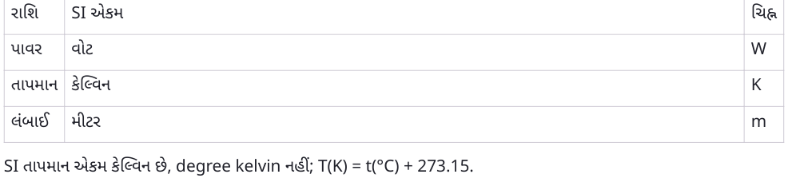
Q.1 (b) · Explain the concept of pressure. · 4 marks
Pressure is the normal force acting per unit area on a surface.
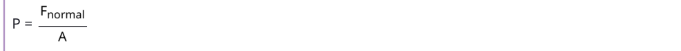
Its SI unit is pascal: 1 Pa = 1 N m⁻². The same force on a smaller area produces greater pressure.
Absolute pressure is measured from a perfect vacuum; gauge pressure is relative to atmospheric pressure: Pabs = Patm + Pgauge.
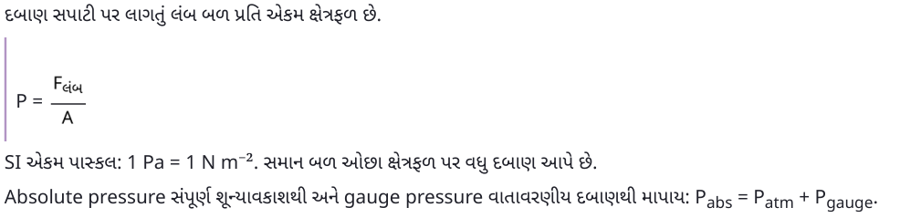
Q.1 (c) · 1. Define Force and show units in SI, CGS and MKS systems. 2. Define Work and show units in SI, CGS and MKS systems. · 7 marks
Force: an interaction that changes momentum. For constant mass, F = ma.
Work: energy transfer when a force causes displacement. For constant force, W = F s cos θ.
1 N = 10⁵ dyne and 1 J = 10⁷ erg. MKS mechanical units use the same newton and joule as SI.
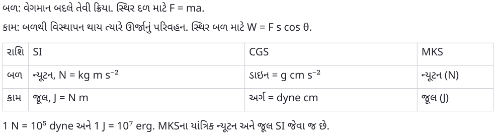
Q.1 (c) · Solve unit conversion of following quantities: 1. 10 m = _____inch 2. 25 t = _____kg 3. 10 m/s = _____ft/s 4. 860 mm Hg = _____N/m2 5. 65 N = _____dyn 6. 1000 kg/m3 =_____g/l 7. 100 cal = _____J · OR · 7 marks
Given: the seven quantities in the question. Use metric tonne, 1 inch = 0.0254 m and 1 ft = 0.3048 m.
Use 760 mm Hg = 101325 Pa, 1 N = 10⁵ dyn and the thermochemical calorie 1 cal = 4.184 J.
Results: 393.70 inch; 25,000 kg; 32.81 ft per s; 114,657 N m⁻²; 6.5 × 10⁶ dyn; 1000 g per L; 418.4 J.
Each conversion factor cancels the original unit; Pa and N m⁻² are identical.
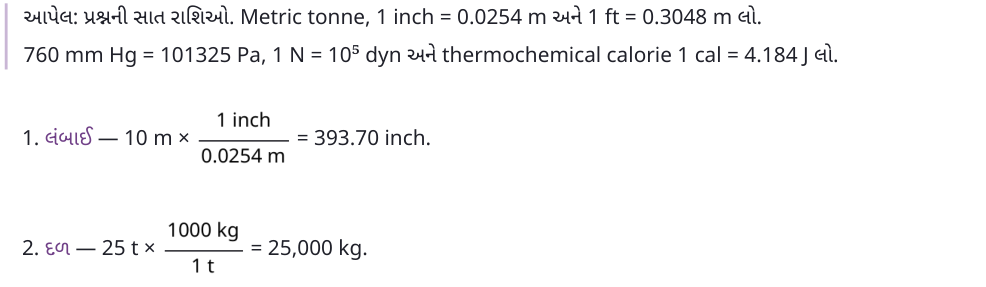
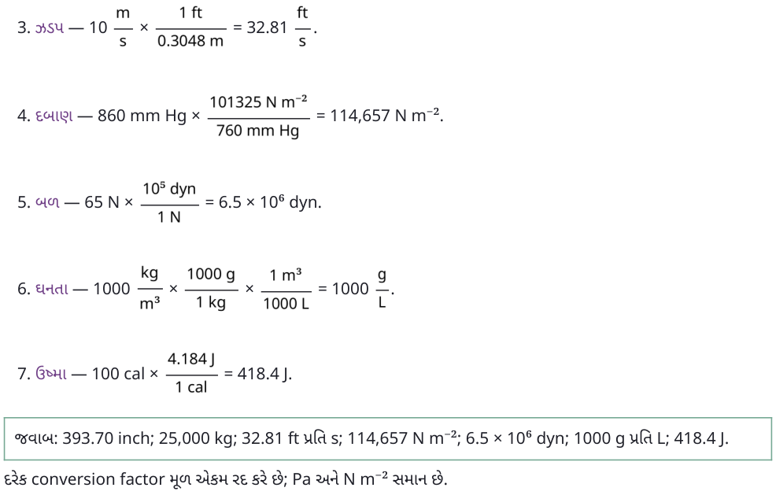
Question 2
Q2 · Fluid properties, energy and vapour pressure
Q.2 (a) · What is the definition of solubility, and what are its common units? · 3 marks
Solubility is the maximum amount of solute that dissolves in a specified amount of solvent at equilibrium at a stated temperature and pressure.
state the basis; solution volume and solvent mass are not interchangeable.
For example, a saturated solution containing 20 g solute in 100 g water has solubility 20 g per 100 g water at that temperature.
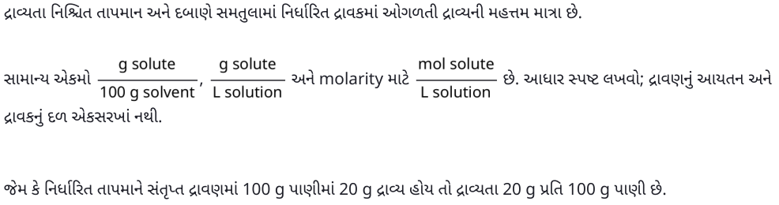
Q.2 (b) · Compare absolute and kinematic viscosity. · 4 marks
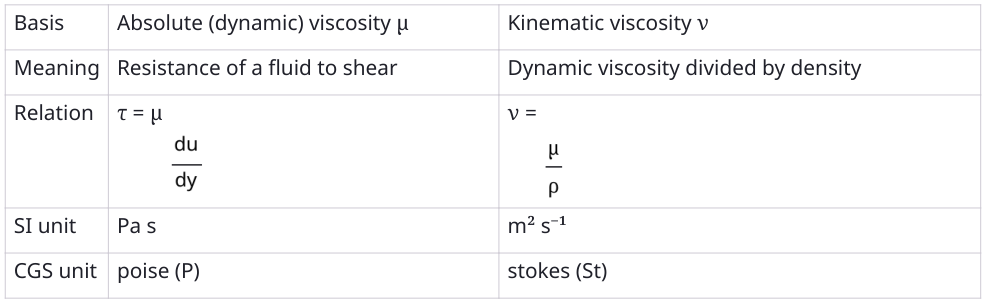
The shear-stress relation shown is for a Newtonian fluid. 1 P = 0.1 Pa s; 1 St = 10⁻⁴ m² s⁻¹. Both usually vary with temperature.
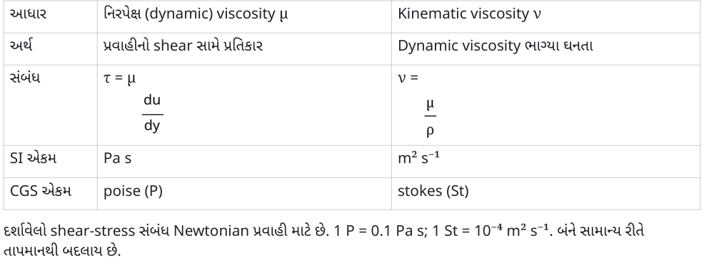
Q.2 (c) · A water is flowing at a mass flowrate of 140 kg/min. What will be the volumetric flowrate in m3/hr, if density of water is taken as 1000 kg/m3 at 20℃. · 7 marks
Find: volume flow Q in m³ per hour.
A flow of 140 kg each minute corresponds to 0.14 m³ each minute at the stated density.
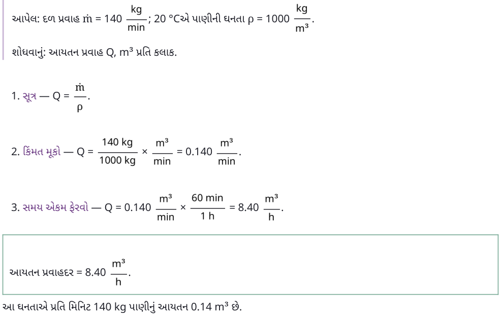
Q.2 (a) · Define vacuum and list the units used to express the vacuum. · OR · 3 marks
Vacuum is a pressure below the local atmospheric pressure; a perfect vacuum has zero absolute pressure.
Pvacuum = Patm − Pabsolute
Common units include Pa, kPa, bar, torr and mm Hg. State whether the reading is absolute pressure or vacuum below the local atmosphere.
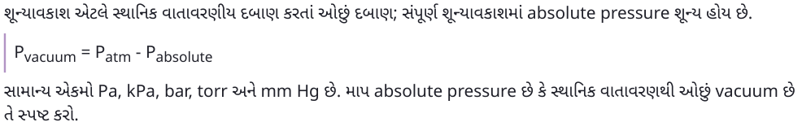
Q.2 (b) · Compare kinetic energy and potential energy. · OR · 4 marks
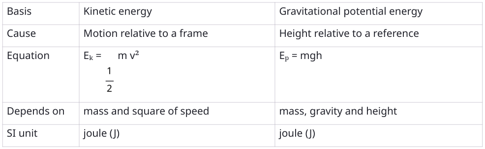
A falling body can convert gravitational potential energy into kinetic energy; losses may also occur.
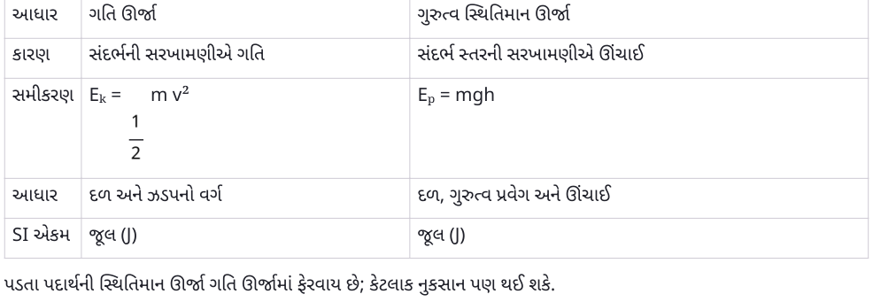
Q.2 (c) · Calculate the vapor pressure of water at 20℃ using Antoine equation. Antoine constants are given below: A= 8.07131, B=1730.63, C= 233.426. · OR · 7 marks
Given: water at t = 20 °C; A = 8.07131, B = 1730.63, C = 233.426.
Convention: Antoine log is base 10, t is in °C and P is in mm Hg.

2. Denominator — C + t = 233.426 + 20 = 253.426.
4. Antilog — P = 101.242374 mm Hg = 17.473 mm Hg.
Vapour pressure ≈ 17.473 mm Hg = 2.330 kPa.
The answer uses the constants exactly as supplied and the mm Hg Antoine convention; a different Antoine convention requires different constants.
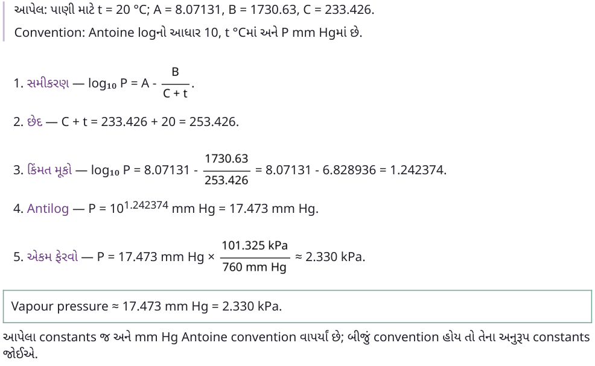
Question 3
Q3 · Composition and concentration
Q.3 (a) · Define molecular weight and calculate molecular weight of Sulfuric acid. · 3 marks
Relative molecular mass is the sum of the relative atomic masses of the atoms in one molecule.
Mᵣ(H₂SO₄) = 2(1) + 32 + 4(16) = 98
Thus Mᵣ = 98 (dimensionless), and the molar mass of H₂SO₄ is 98 g mol⁻¹ or 98 kg kmol⁻¹.
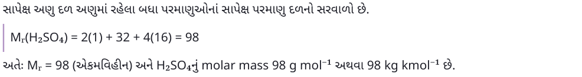
Q.3 (b) · Summarize how mole fraction and weight fraction represent the composition of a mixture. · 4 marks
Mole fraction xᵢ compares moles of component i with total moles. Mass (weight) fraction wᵢ compares its mass with total mass.
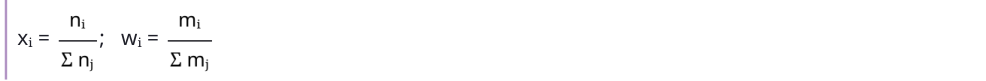
Each set sums to 1; multiply by 100 for mole or mass percent. They differ when component molar
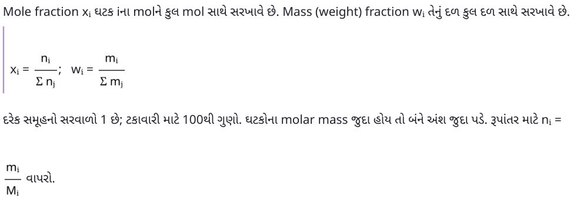
Q.3 (c) · An aqueous solution of sodium chloride is prepared by dissolving 30 kg of sodium chloride in 100 kg of water. Determine: (1) Weight percentage (2) Mole Percentage. · 7 marks
Given: 30 kg NaCl and 100 kg H₂O; total solution mass 130 kg.
Use MNaCl = 58.5 and MH₂O = 18 kg kmol⁻¹. Count NaCl formula units.
4. Total moles — ntotal = 0.512821 + 5.555556 = 6.068377 kmol.
NaCl: 23.08 mass% and 8.45 mole%; water: 76.92 mass% and 91.55 mole%.
The two pairs add to 100%. Mole composition is on a salt formula-unit basis, not a count of dissociated ions.
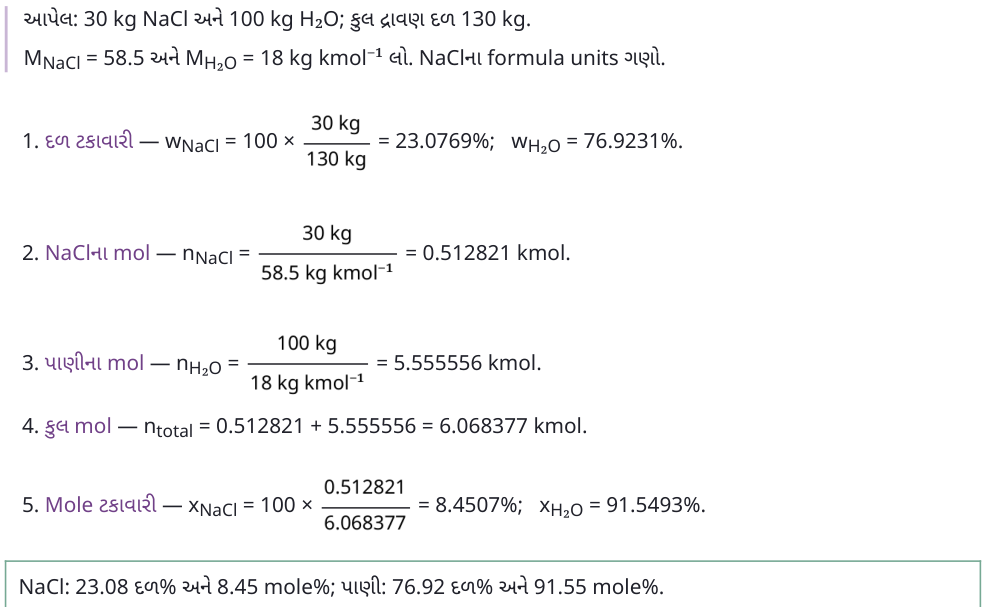
Q.3 (a) · Explain Normality with its equation. · OR · 3 marks
Normality N is the number of reactive equivalents of solute per litre of solution.
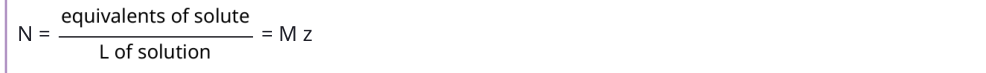
z is equivalents per mole for the specified reaction. For complete neutralisation, 1 M H₂SO₄ is 2 N; for only one reacting proton it is 1 N.
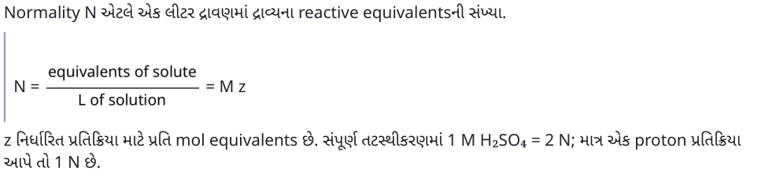
Q.3 (b) · Compare Specific gravity and API gravity. · OR · 4 marks
Specific gravity of a liquid is its density relative to water at the stated reference temperatures; it has no units.
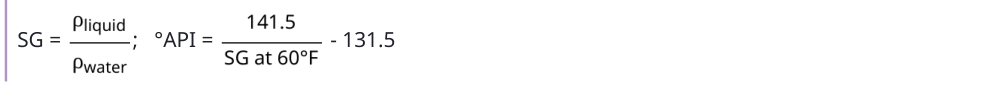
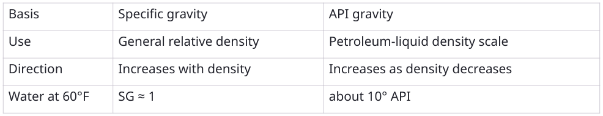
The API equation uses the liquid specific gravity referenced to water at 60°F.
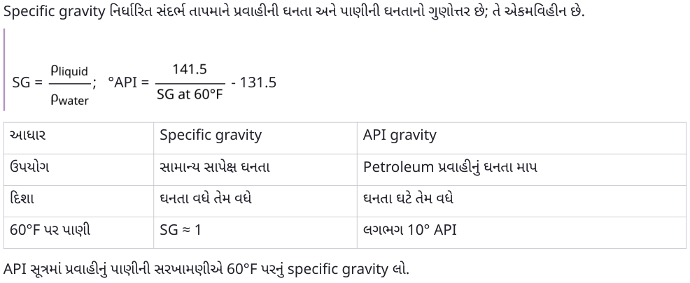
Q.3 (c) · 40 gm of Caustic soda is dissolved in water to prepare 500 ml of solution. Find the normality and molarity of the solution. · OR · 7 marks
Given: 40 g caustic soda (NaOH) makes 500 mL = 0.500 L of solution.
MNaOH = 40 g mol⁻¹; for acid neutralisation z = 1 equivalent per mole.
4. Normality — N = zM = 1 × 2.000 = 2.000 eq L⁻¹.
Molarity = 2.00 M; normality = 2.00 N.
Use the final solution volume, not the volume of water before dissolving.
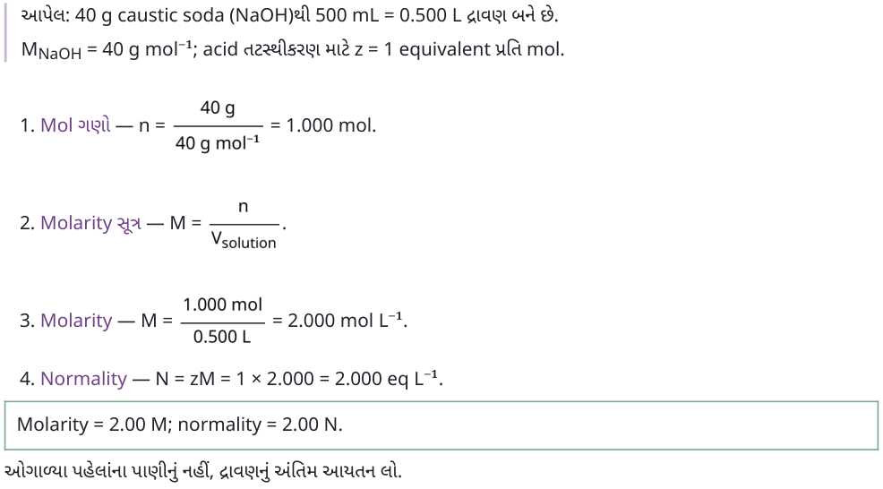
Question 4
Q4 · Molality, gas mixtures and separation balances
Q.4 (a) · Explain Molality with its equation. · 3 marks
Molality m is moles of solute per kilogram of solvent, not per kilogram of solution.
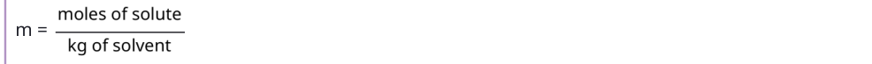
For example, 1 mol solute in 0.5 kg solvent has molality 2 mol kg⁻¹. Unlike molarity based on volume, molality does not change merely because temperature changes.
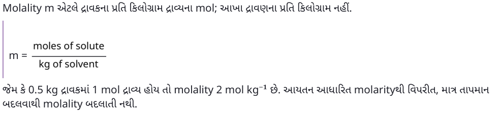
Q.4 (b) · Draw a basic block flow diagram of distillation operation and write down the general equations for overall and component material balances. · 4 marks
For distillation, F is feed, D distillate and B bottoms. Let H be the mass held inside the unit, x its component mass fraction, and xstream the same component’s mass fraction in each stream. Flows are mass rates.
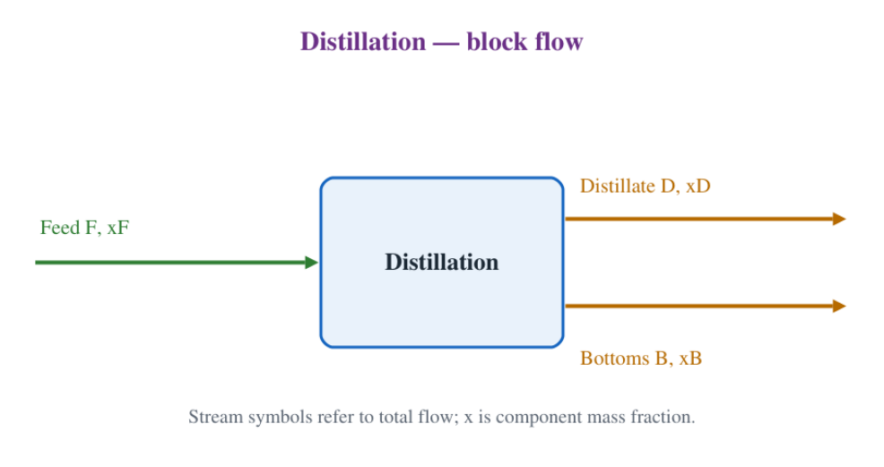
Distillation block flow with labelled feed and products.
Without chemical reaction, the general balances including accumulation are:
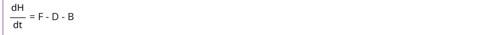

At steady state accumulation is zero, giving:
F = D + B; F xF = D xD + B xB
Volatile-component fractions need not be pure.
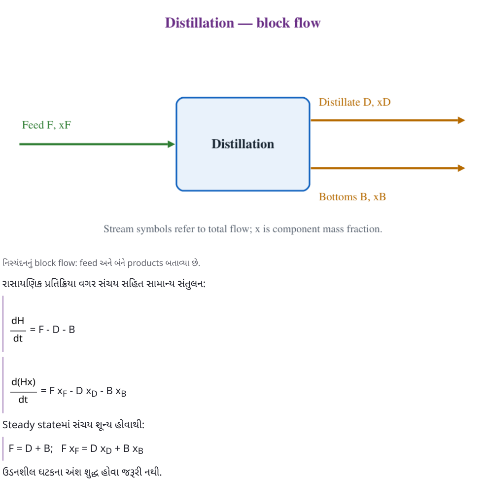
Q.4 (c) · A binary mixture of H2 and O2 contains 15 % H2 by weight. Calculate average molecular weight of gas mixture. · 7 marks
Basis: 100 kg gas mixture: 15 kg H₂ and 85 kg O₂.
MH₂ = 2 and MO₂ = 32 kg kmol⁻¹.
3. Total amount — n = 7.50000 + 2.65625 = 10.15625 kmol.
Average molecular weight = 9.85 kg kmol⁻¹ (numerically 9.85 g mol⁻¹).
The result is between the two component molar masses; mass fraction is not the same as mole fraction.
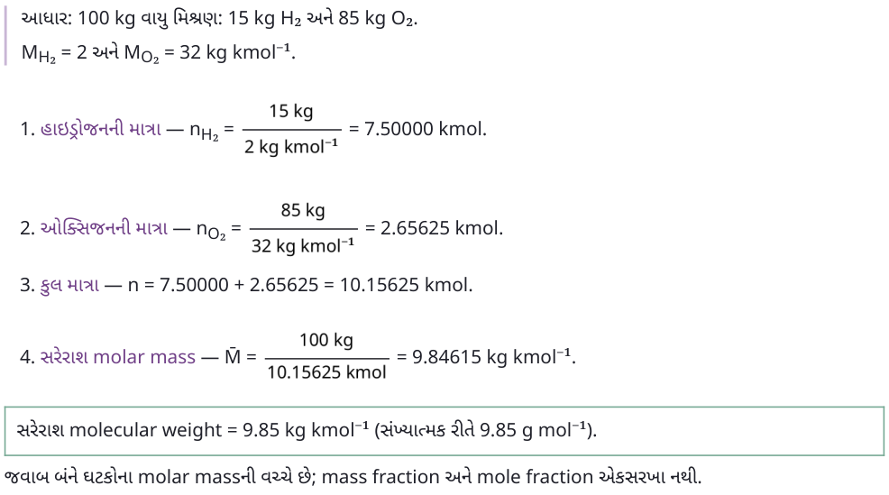
Q.4 (a) · Convert 132 kg of CO2 into its amount in molar units. · OR · 3 marks
Given: 132 kg CO₂; atomic masses C = 12, O = 16.
1. Molar mass — MCO₂ = 12 + 2(16) = 44 kg kmol⁻¹.
Amount of CO₂ = 3.00 kmol = 3000 mol.
Three kilomoles of CO₂ have mass 3 × 44 = 132 kg.
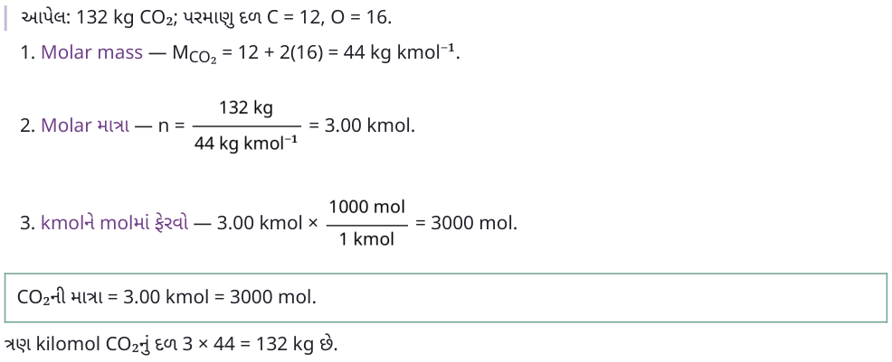
Q.4 (b) · Draw a basic block flow diagram of liquid-liquid extraction operation and write down the general equations for overall and component material balances. · OR · 4 marks
F is the feed, S the added solvent, E the extract and R the raffinate; each is a total mass flow rate. Each x is the mass fraction of the same solute. H is the extractor holdup and x its solute mass fraction.
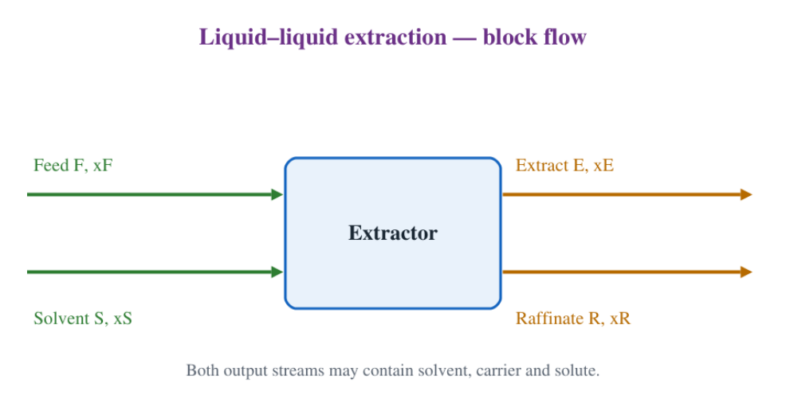
Liquid–liquid extractor with feed, solvent, extract and raffinate.
Without reaction, general balances including accumulation are:
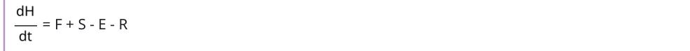
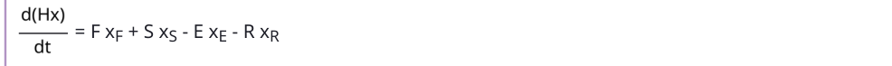
At steady state:
F + S = E + R; F xF + S xS = E xE + R xR
For fresh solvent with no solute, xS = 0; both product streams can still contain solvent and carrier liquid.
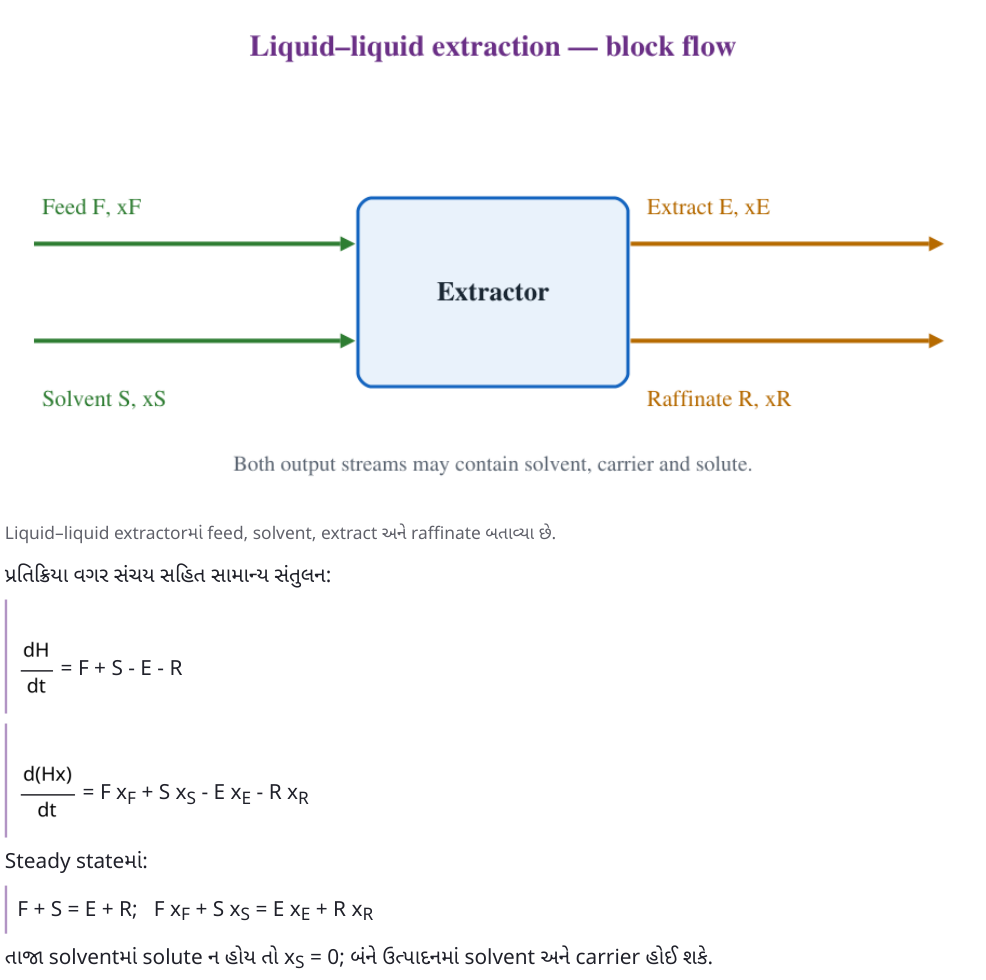
Q.4 (c) · Develop an expression for density of gas mixture. · OR · 7 marks
Assumptions: an ideal-gas mixture, absolute pressure P, absolute temperature T, total molar amount n and mixture molar mass M̄ .
1. Mean molar mass — M̄ = Σ(yᵢ Mᵢ), where yᵢ is the mole fraction and Mᵢ is component molar mass.
2. Total mass — m = n M̄ .
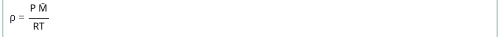
For P in kPa, M̄ in kg kmol⁻¹ and R = 8.314 kPa m³ kmol⁻¹ K⁻¹, ρ is in kg m⁻³. Use a compressibility factor for significant real-gas deviation.
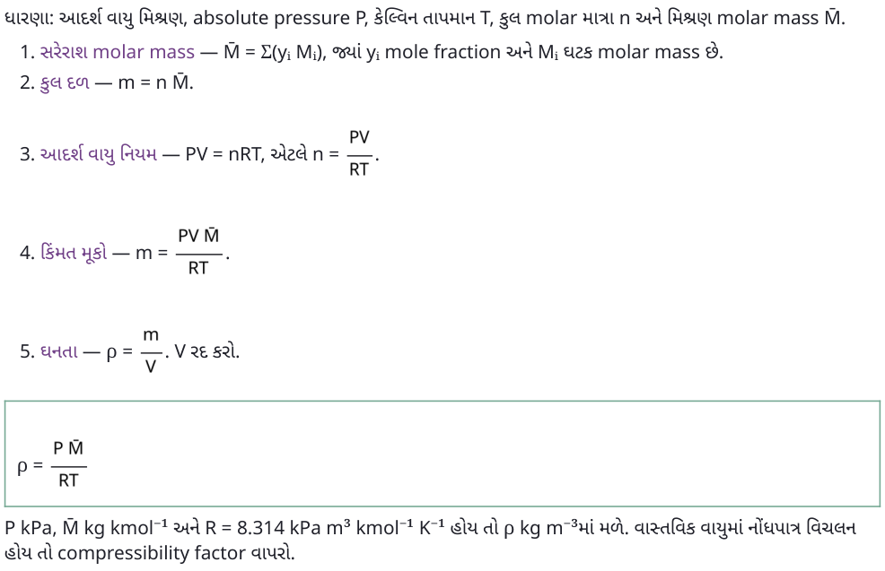
Question 5
Q5 · Gas laws, material balances and ideal-gas calculation
Q.5 (a) · Explain Daltons’s Law. · 3 marks
Dalton’s law of partial pressures: for an ideal-gas mixture the total pressure equals the sum of the component partial pressures.
P = Σ pᵢ; pᵢ = yᵢ P
Here yᵢ is the gas mole fraction. Each partial pressure is the pressure that component would exert alone at the mixture temperature and volume. Real gases can deviate at high pressure.
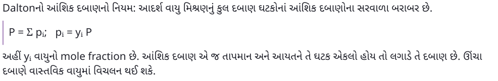
Q.5 (b) · Draw a basic block flow diagram of mixing operation and write down the general equations for overall and component material balances. · 4 marks
F₁ and F₂ are feed mass rates, M is mixed-product mass rate, and x₁, x₂ and xM are mass fractions of the same component. H is material held in the mixer and x its component fraction.
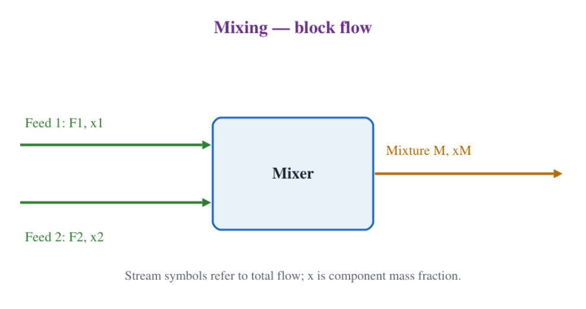
Two feed streams enter a mixer; one mixed stream leaves.
For no reaction, the general balances including accumulation are:


At steady state the accumulation terms vanish:
F₁ + F₂ = M; F₁ x₁ + F₂ x₂ = M xM
The component balance applies separately to each conserved component.


Q.5 (c) · Develop equation of Ideal gas law. · 7 marks
Objective: combine the ideal-gas laws for pressure P, volume V, amount n and absolute temperature T.
2. Charles’ law — At constant n and P, V ∝ T, with T in kelvin.
3. Avogadro’s law — At constant P and T, V ∝ n.
5. Rearrange — Multiply both sides by P.
PV = nRT
For P in kPa, V in m³ and n in kmol, R = 8.314 kPa m³ kmol⁻¹ K⁻¹. Use absolute pressure and K, not gauge pressure or °C. The model is most reliable at low pressure and away from condensation.
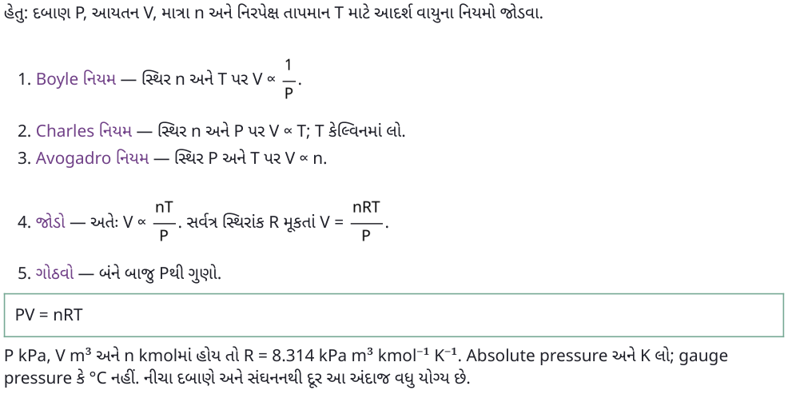
Q.5 (a) · Explain Henry’s Law. · OR · 3 marks
Henry’s law: at fixed temperature, the equilibrium partial pressure of a dilute dissolved gas is proportional to its liquid mole fraction.
pᵢ = Hᵢ xᵢ
Here Hᵢ is the Henry constant in the pressure-over-mole-fraction convention; reciprocal conventions also exist. It is an approximation for dilute, non-reacting solutes and can fail at high concentration or pressure.
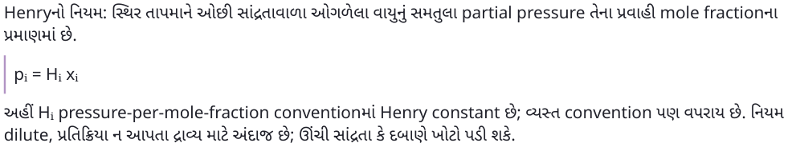
Q.5 (b) · Draw a basic block flow diagram of filtration operation and write down the general equations for overall and component material balances. · OR · 4 marks
For filtration, F is slurry feed, L filtrate and C wet filter cake. Let H be the mass held inside the unit, x its component mass fraction, and xstream the same component’s mass fraction in each stream. Flows are mass rates.
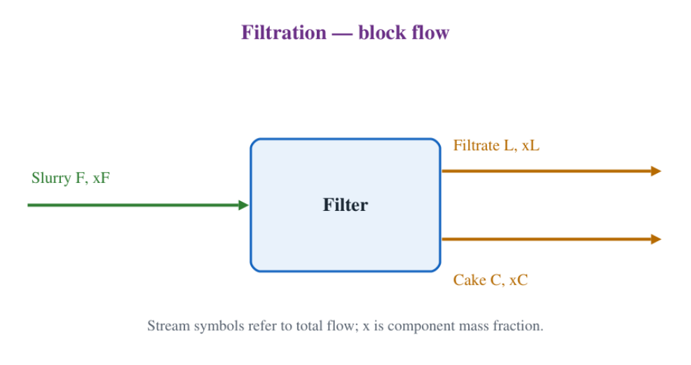
Filtration block flow with labelled feed and products.
Without chemical reaction, the general balances including accumulation are:
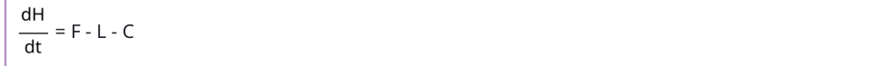
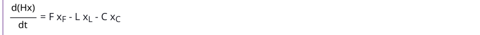
At steady state accumulation is zero, giving:
F = L + C; F xF = L xL + C xC
If x is the suspended-solid mass fraction and filtrate is clear, xₗ ≈ 0.
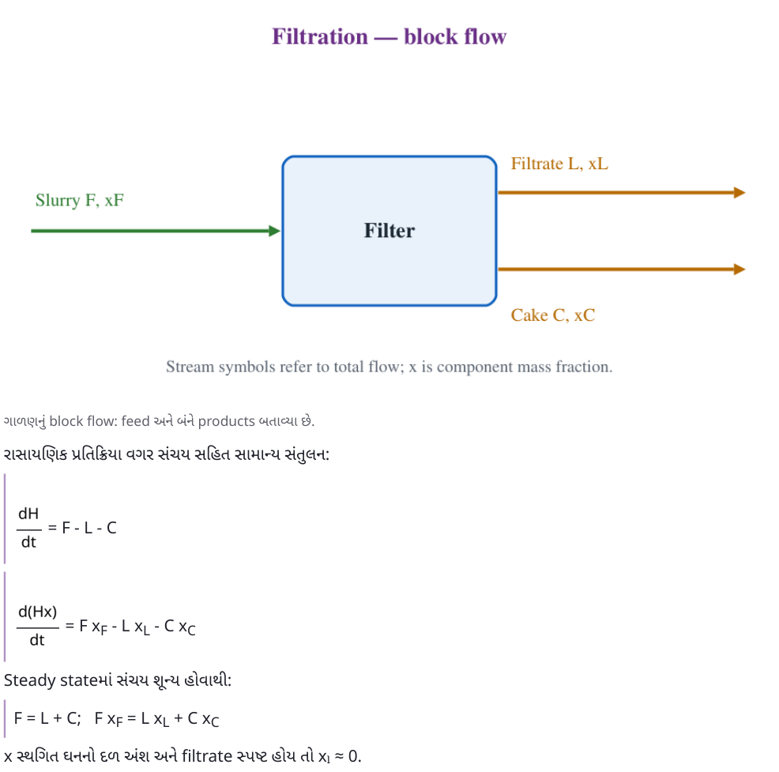
Q.5 (c) · Calculate the weight of sulphur dioxide in a vessel having 2 m3 volume, 97.33 KPa pressure and 393 K temperature using Ideal gas law. · OR · 7 marks
Given: V = 2 m³, absolute P = 97.33 kPa and T = 393 K.
Use R = 8.314 kPa m³ kmol⁻¹ K⁻¹ and MSO₂ = 32 + 2(16) = 64 kg kmol⁻¹.
Assume: ideal-gas behaviour.
3. Convert amount to mass — m = n M = 0.059576 kmol × 64 kg kmol⁻¹ = 3.8129 kg.
Mass of SO₂ ≈ 3.81 kg.
The given pressure is treated as absolute. If it is gauge pressure, atmospheric pressure must be added before using the ideal gas law.
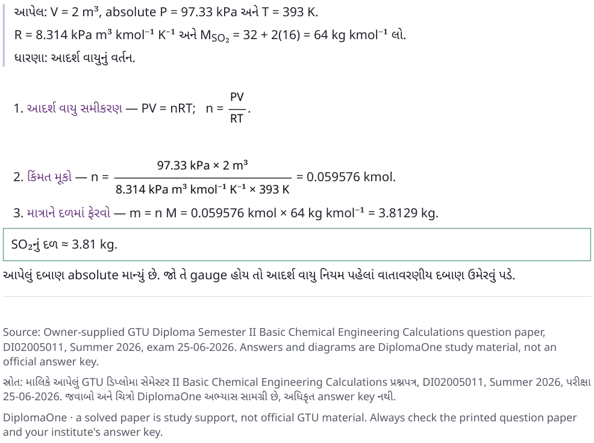